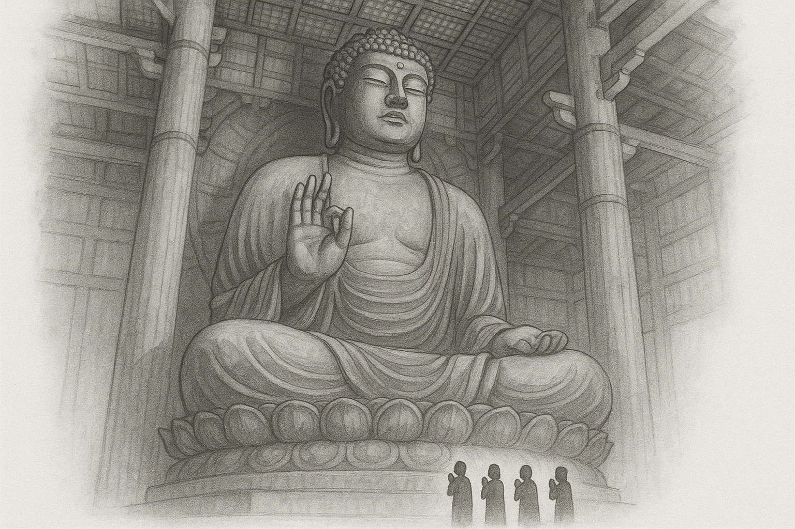

仏教で国を守る
仏教の力で、
国を安定させようとした
752
★ テスト頻出
1
④
聖武天皇
が仏教を厚く保護
仏教が国家を守り、政治を安定させると考えた
2
国ごとに
⑤
国分寺
と国分尼寺
地方の国それぞれに建てた
3
奈良に
⑥
東大寺
をつくる
都の中心となる大きな寺
4
その寺に
③
大仏
をつくる
752年に完成（開眼供養）
★ 記述で出る
巨大な仏像をつくった
理由
＝「仏教の力で国家を守り、政治を安定させようとしたため」。

第7章 律令政治と奈良時代
SEED EDUCATION